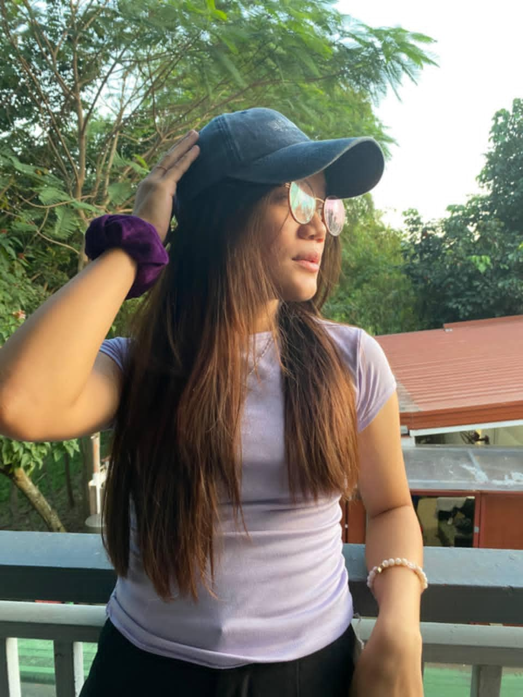

Hi, I’m Jocelyn B. Parane. I’m passionate about exploring the world of computer science, especially in the field of Data Science. I love learning new programming languages and developing creative solutions to complex problems. I am eager to continue expanding my knowledge and skills in technology.
If you’d like to reach out or collaborate, feel free to contact me through the following platforms: